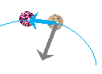
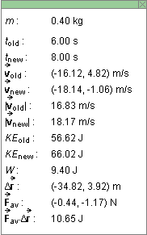
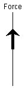

There are four basic control buttons. They are, from left to right:
-
 Rewind. Resets the particle to its starting
position and starting velocity after a motion has been
created with the Force Dial (see Point 8). After
clicking REWIND, click STEP FORWARD to step through the
motion created with the Force Dial.
Rewind. Resets the particle to its starting
position and starting velocity after a motion has been
created with the Force Dial (see Point 8). After
clicking REWIND, click STEP FORWARD to step through the
motion created with the Force Dial.
- Step Forward. The applet has no PLAY button. The motion is created by means of the Force Dial. (See Point 8.) After the motion has been created this way, click REWIND, and then STEP FORWARD to step through the motion in equal time steps and observe the work done on the particle and the corresponding kinetic energy change in each time step.
-
Step Back. After Stepping Forward through the original motion one or more steps, the STEP BACK button becomes active allowing you to step back again.
-
 Reset. Resets the applet to its default setting.
Reset. Resets the applet to its default setting.
A new motion can only be created after RESET, not after REWIND.


The Trace toggle button displays/hides the particle's path (in cyan).
The path is not erased when you Rewind the applet. However, you cannot create a new motion after Rewinding the applet. You can only Step Forward or Step Back through the original motion, or Reset the applet to create a new motion.

Selecting the Force toggle button displays the net force acting on the particle by means of a grey arrow, as in the image above.
When stepping through the motion, the applet shows the particle at the beginning and at the end of the step interval. The net force is shown only at the beginning of this interval.

The Data toggle button displays/hides the data box shown above. Values for the following quantities are displayed in the data box.
- m: mass of the particle (cannot be changed)
- told: time at beginning of given time step
- tnew: time at end of given time step
-
 old: velocity of particle at
beginning of given time step in terms of its x and
y components; the x-axis is horizontal and
pointing to the right, and the y-axis is vertical
and pointing upward
old: velocity of particle at
beginning of given time step in terms of its x and
y components; the x-axis is horizontal and
pointing to the right, and the y-axis is vertical
and pointing upward
-
new: velocity of particle at end
of given time step in terms of its x and y
components
-
|old|: speed of particle at
beginning of given time step
-
|new|: speed of particle at end
of given time step
- KEold: kinetic energy of particle at beginning of given time step
- KEnew: kinetic energy of particle at end of given time step
- W: work done on the particle during the given time step by the net force
-
D
 : displacement of the particle during
the given time step
: displacement of the particle during
the given time step
-
 av: average net force acting on
the particle during the given time step in terms of its
x and y components
av: average net force acting on
the particle during the given time step in terms of its
x and y components
-
avD: scalar product
of the average net force acting on the particle and the
displacement of the particle during the given time step;
this scalar product approximates the work W listed above; W is the exact work done on the particle during the given time step
The applet can be set to either a one-dimensional (1D) or two-dimensional (2D) mode by checking the appropriate radio button shown in the image above.
The applet is in the 2D mode in the image at the Top. In this mode the force in the force dial can be varied in two dimensions and the resulting motion of the particle is two-dimensional as well.
In the 1D mode, the 2D Force Dial (see Point 8 below) is replaced by a 1D vertical line along which the force can be varied. The resulting particle motion is correspondingly restricted to being vertical also. The following image shows the "Force Dial" in the 1D mode.

The Ruler can be used to measure distances between points or lengths of vector arrows in any direction: horizontal or on a slant.
To move the Ruler without changing it, click on it near the middle and drag. To move one of the endpoints of the Ruler and thereby change the Ruler's length or orientation, click on the endpoint and drag. The distance between the Ruler's endpoints is displayed in unspecified units.